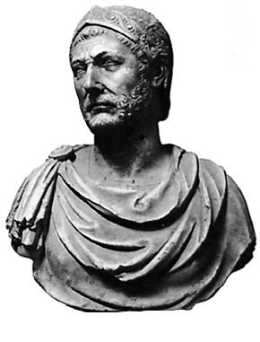

| |
Hannibal
Hannibal,son of Hamilcar Barca ,born in 247 BC was considered to be one of the greatest Punic Carthaginian military commander in history.His father was also the greatest Carthaginian commander during the First Punic War.Hannibal lived during a period when there was tensions in the mediterranean ,when Rome established its supremacy over great powers of Carthage,and the Hellinistic kingdoms of MAcedon,Syracuse and the Seleucid Empire.In the Second Punic War he marched an army which included war elephants over the Pyrenees.Hannibal was a great leader as he occupied much of Italy for 15 years but later he was forced to return to Carthage where he was defeated by Scipio Africanus.Hannibal fled from many places as he was unpopular with the members of the Carthaginian aristocracy and in Rome,and later he made a stop at Armenia where he acheived naval victory agaginst a fleet from Pergamon.He was afterwards betrayed to the Romans and committed suicide by poisoning himself.

Hannibal
For
more information please visit :
More Information about Hannibal from Wikipedia
| |
|
|